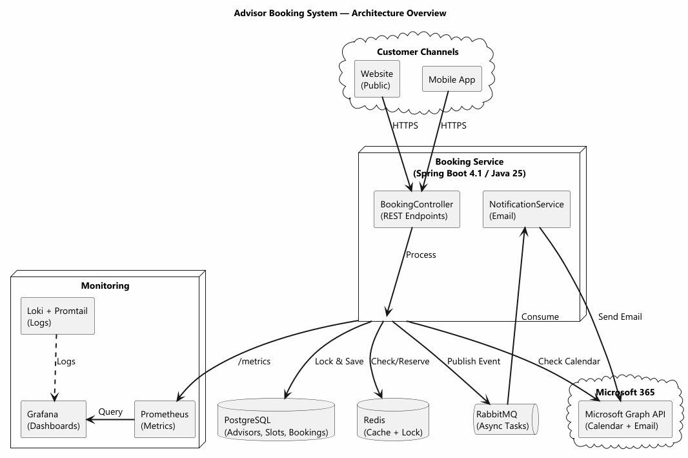

Advisor Booking System
Solution Architecture
Java 25 · Spring Boot 4.1 · PostgreSQL · Redis · RabbitMQ · Microsoft Graph API
Preventing double-booking in a financial advisory environment
The Problem
A financial advisory company needs to improve customer experience:
- Appointments coordinated manually via phone calls and email
- Unnecessary delays for customers and advisors
- No centralized booking capability
- Risk of double-booking when multiple customers try the same slot
Goal: Let customers book directly from website and mobile app.
1. Solution Overview
Architecture Style
- Modular Monolith — simple, cheap to run, easy to maintain
- Can split into microservices later if needed
Key Technologies
| Component | Technology |
|---|
| Backend | Java 25 + Spring Boot 4.1 |
| Database | PostgreSQL |
| Cache | Redis |
| Queue | RabbitMQ |
| Calendar | Microsoft Graph API |
| Email | Microsoft Graph API |
Main Java Components
Core Services
- BookingController — REST endpoints
- BookingService — Core logic
- CalendarService — Microsoft Graph API
- NotificationService — Email sending
Data & Events
- BookingRepository — PostgreSQL access
- AvailabilityCacheService — Redis cache
- BookingEventPublisher — RabbitMQ publish
- BookingEventHandler — Async email
2. Architecture Diagram

Website + Mobile App → API Gateway → Booking Service → PostgreSQL + Redis + RabbitMQ + Microsoft Graph API
Step-by-Step Flow
- Customer clicks free slot on Website or Mobile App
- API Gateway routes request to Booking Service
- Booking Service checks Redis cache (fast check)
- Booking Service locks slot in DB:
SELECT ... FOR UPDATE
- Booking Service calls Microsoft Graph API to verify calendar
- Booking Service saves booking to PostgreSQL
- Booking Service publishes "booking.confirmed" to RabbitMQ
- Notification Service consumes message, sends email
- Customer sees: "Booking confirmed!"
3. Handling Race Conditions
The Problem: Customer A books Advisor X at 10:00. Customer B books the same advisor milliseconds later. Both see the slot as free.
Three-Layer Protection:
- Redis TTL (5 min) — Slot marked as "reserved" immediately. Other customers see it as busy.
- Database Pessimistic Lock —
SELECT ... FOR UPDATE locks the row. Customer B must wait.
- Unique Constraint —
(advisor_id, start_time, end_time) prevents duplicates at DB level.
Race Condition — What User Sees
Customer A (Wins)
- Slot reserved in Redis
- DB row locked
- Calendar event created
- Booking saved
- Email sent
- "Booking confirmed!"
Customer B (Loses)
- Sees slot as "reserved" in Redis
- Waits for DB lock
- Slot now marked as booked
- "Sorry, this time slot was just taken."
4. Error Handling
Three scenarios the system must handle gracefully:
Scenario A: Calendar Service Unavailable
Customer Experience
"We are having trouble checking the calendar. Please try again."
System Response
- Log:
ERROR - CalendarService - Graph API returned 503
- Retry: 3 attempts, 1-second delay between
- If still failing: Booking rejected, slot released
Scenario B: Database Unavailable
Customer Experience
"System is under maintenance. Please try again later."
System Response
- Log:
CRITICAL - DatabaseConnection - Cannot connect
- Retry: No — cannot safely process bookings
- Alert: Health check notifies team immediately
Scenario C: Email Fails to Send
Customer Experience
Still sees "Booking confirmed!" — booking is saved regardless.
System Response
- Log:
WARN - NotificationService - Failed to send email
- Retry: RabbitMQ retries 5 times with exponential backoff
- DLQ: Failed messages go to dead letter queue for manual review
5. Scalability & Future Growth
Target: 500,000 bookings/month across 2,000 advisors
Load: ~700 bookings/hour = ~0.2 bookings/second (low load)
Scaling Strategy
| Scenario | Solution |
|---|
| More bookings | Horizontal scaling — add Booking Service instances behind API Gateway |
| More advisors | No change needed — advisors are just data in the database |
| More channels | Add new channel (e.g., WhatsApp) — it calls the same API |
| Traffic spikes | Auto-scale containers on Azure/AWS based on CPU or request count |
Database Scaling
- Start: Single PostgreSQL with connection pooling (HikariCP)
- Later: Read replicas for reporting, sharding by advisor ID
Monitoring
What to Monitor
- Booking success rate (target: > 99.5%)
- Average booking time (target: < 2s)
- Email send success rate
- Calendar API response time
- Database connection pool usage
Tools
| What | Tool |
|---|
| Metrics | Prometheus + Grafana |
| Logs | Loki + Promtail |
| Alerts | Grafana Alerting |
| Health | /actuator/health (30s checks) |
Architecture Decisions
Why Not Microservices?
- Overkill for this scale (0.2 bookings/sec)
- More operational complexity
- Harder to debug across services
Why Modular Monolith?
- Simple to deploy and monitor
- Cheap to run (single container)
- Easy to split later if needed
- Clear module boundaries for future extraction